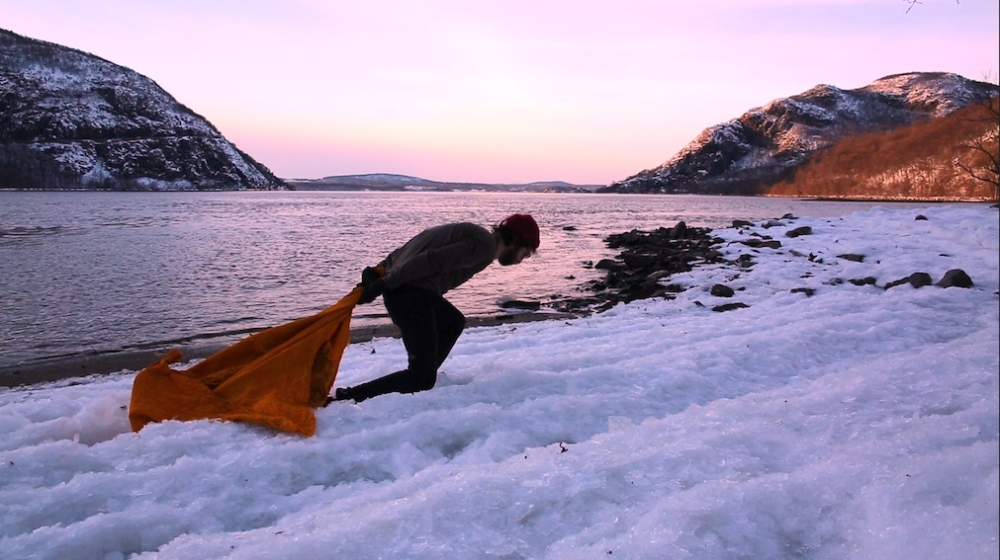
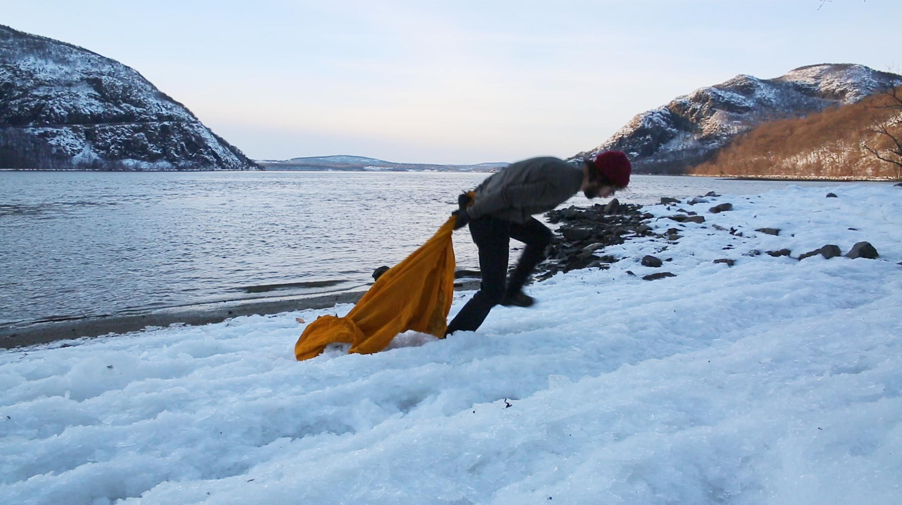

Home
Projects
About
contact
NOAH SOKOLOFF
unedited (Yellow Ice Drag)
Unedited (yellow ice drag)- 2017 was performed at little stoney point on the hudson river.
documentation stills. shot on the hudson river in winter- 2017

documentation stills. shot on the hudson river in winter- 2017
